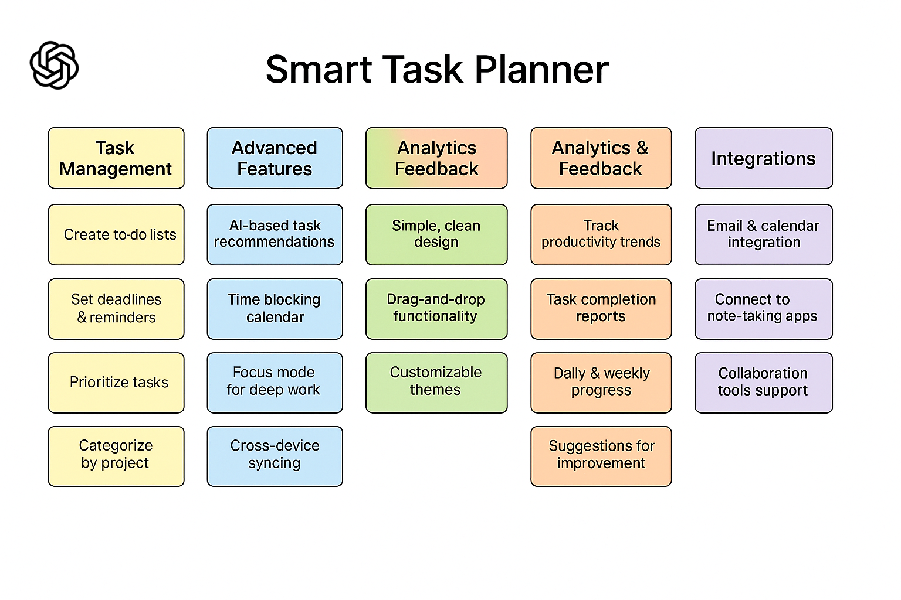

Highlighted Project :
Problem Statement

College students struggle to find available parking spaces on campus because lots are overcrowded and there’s no real-time system showing which spaces are free.
Affinity Diagram
The affinity diagram organizes ideas and features for the Smart Task Planner into groups such as task management, advanced features, analytics, and integrations. It helped define the main functions and goals of the app.
Sketches

The sketches show how the Smart Task Planner app will look and function. Each screen displays a different feature, including the home dashboard, task creation page, and analytics screen that tracks progress.
Adjacency Matrix Graph-CSCE146

A Java implementation of a graph represented by an adjacency matrix, featuring both depth-first and breadth-first search algorithms.